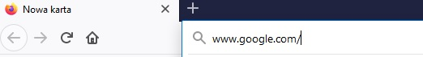
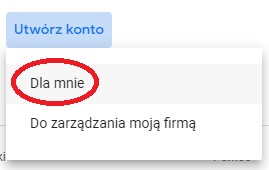
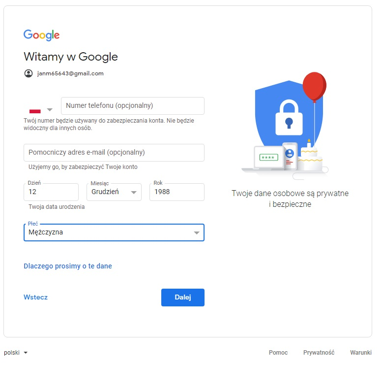
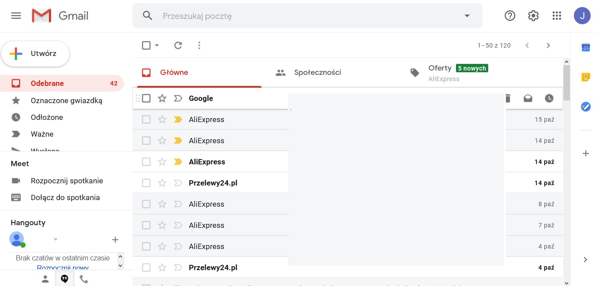

Zakładamy pocztę elektroniczną e-mail
Usługę poczty elektronicznej oferuje ogromna ilość portali internetowych. Najpopularniejsze w Polsce to m.in.:
wp.pl, onet.pl, interia.pl, o2.pl i oczywiście gmail dostępny w wyszukiwarce Google.
Oto jak założyć konto pocztowe w Google.
Uruchamiamy przeglądarkę internetową np. Firefox, Chrome, Microsoft Edge itp.

W pole adresu wpisujemy: www.google.com
Uruchomi nam się wyszukiwarka

W górnym, prawym rogu klikamy na przycisk Gmail
Pojawi się okenko

Klikamy w dolny przycisk Utwórz konto
Pojawi się możliwość wyboru rodzaju konta

Wybieramy Dla mnie
Pojawi się okienko kreatora konta.
Ważne by podać imię i nazwisko rodzica!.
Nie przezwisko, nie "ksywkę". Proszę nie wpisywać żadnych misiów, buziaczków itp.
Poczta ma służyć do zdalnego nauczania, korzystania z e-dziennika i kontaktów z nauczycielami. Gdy nauczyciel otrzyma E-mail od np. misiaczka88@gmail.com to nie wie z kim ma do czynienia.
A więc imię i nazwisko
np. Jan Matejko
Kreator wygeneruje dostępną nazwę użytkownika (login).
Należy go zapisać, żeby nie zapomnieć!
W naszym przykładzie Jan Matejko otrzymał nazwę użytkownika:
janm65643@gmail.com
Następnie należy wpisać dwukrotnie hasło. Ma ono składać się z conajmniej 8 znaków z wielką i małą literą, cyfrą i znakiem specjalnym.
Przykład: Zaq!2wsx
Hasło należy również zapisać, żeby nie zapomnieć!

Klikamy Dalej
W kolejnym okienku Google poprosi o nr telefonu i drugiego e-maila. Nie musimy podawać tych informacji.
Klikamy Dalej 
Kolejne okienko to Warunki korzystania z usługi
Należy zaakceptować warunki, zgodzić się na przetwarzanie danych i kliknąć w przycisk Utwórz konto

Konto gotowe. Można korzystać z poczty elektronicznej.
Aby się zalogować uruchamiamy wyszukiwarkę Google i klikamy na przycisk Gmail
W okienku Zaloguj się wpisujemy nazwę użytkownika np. janm65643@gmail.com

Klikamy Dalej i następnie wpisujemy hasło.
Klikamy Dalej
Otworzy nam się poczta

Adres e-mail należy podać wychowawcy, który przekaże go administratorowi e-dziennika. Administrator lub wychowawca przekaże Państwu kod dostępu do e-dziennika. Warunkiem jest posiadanie e-maila.